R/cyto_plot_compensation.R
cyto_plot_compensation.Rdcyto_plot_compensation plots each compensation control in all
fluorescent channels to make it easy to identify any potential compensation
issues. The unstained control is automatically overlaid onto the plot as a
refernce if supplied.
# S3 method for GatingSet cyto_plot_compensation( x, parent = NULL, channel_match = NULL, compensate = FALSE, spillover = NULL, axes_trans = NA, axes_limits = "machine", overlay = TRUE, layout = NULL, popup = FALSE, title = NA, header = NULL, header_text_font = 2, header_text_size = 1, header_text_col = "black", density_stack = 0, density_fill = c("grey", "blue"), density_fill_alpha = 0.5, ... ) # S3 method for GatingHierarchy cyto_plot_compensation( x, parent = NULL, channel_match = NULL, compensate = FALSE, spillover = NULL, axes_trans = NA, axes_limits = "machine", layout = NULL, popup = FALSE, title = NA, header, header_text_font = 2, header_text_size = 1, header_text_col = "black", density_stack = 0, density_fill = c("grey", "blue"), density_fill_alpha = 0.5, ... ) # S3 method for flowSet cyto_plot_compensation( x, channel_match = NULL, compensate = FALSE, spillover = NULL, axes_trans = NA, axes_limits = "machine", overlay = TRUE, layout = NULL, popup = FALSE, title = NA, header = NULL, header_text_font = 2, header_text_size = 1, header_text_col = "black", density_stack = 0, density_fill = c("grey", "blue"), density_fill_alpha = 0.5, ... ) # S3 method for flowFrame cyto_plot_compensation( x, channel_match = NULL, compensate = FALSE, spillover = NULL, axes_trans = NA, axes_limits = "machine", layout = NULL, popup = FALSE, title = NA, header = NULL, header_text_font = 2, header_text_size = 1, header_text_col = "black", density_stack = 0, density_fill = c("grey", "blue"), density_fill_alpha = 0.5, ... )
| x | object of class |
|---|---|
| parent | indicates the name of the parent population to extract fro
plotting to plot for GatingSet objects. Users can specify a parent for each
compensation control either as a vector or by adding a parent column to
|
| channel_match | name of the fluorescent channel associated with the
|
| compensate | logical indicating whether the samples should be compensated prior to plotting, set to FALSE by default. If no spillover matrix is supplied to the spillover argument the spillover matrix will extracted from the samples. |
| spillover | name of spillover matrix csv file including .csv file
extension to apply to sample when |
| axes_trans | object of class
|
| axes_limits | options include |
| overlay | logical indicating whether the unstained control should be
overlaid onto the plot if supplied in the flowSet or GatingSet, set to
|
| layout | vector of grid dimensions |
| popup | logical indicating whether plots should be constructed in a pop-up window. |
| title | text to include above each plot, set to NA by default to remove titles. |
| header | title to use for the plots, set to the name of the sample by default. Turn off the header by setting this argument to NA. |
| header_text_font | font to use for header text, set to 2 by default. |
| header_text_size | text size for header, set to 1 by default. |
| header_text_col | colour for header text, set to "black" by default. |
| density_stack | numeric passsed to cyto_plot to control the degree of stacking for density distributions, set to 0 by default. |
| density_fill | vector of colours passed to cyto_plot to control the fill colours of density distributions, set to c("grey","blue") by default. |
| density_fill_alpha | numeric passed to cyto_plot to control the fill transparency of density distributions, set to 0.5 by default. |
| ... | additional arguments passed to |
library(CytoExploreRData) # Bypass directory check for external files options("CytoExploreR_wd_check" = FALSE) # Load in compensation controls gs <- GatingSet(Compensation) # Gate single cells using cyto_gate_draw gt <- Compensation_gatingTemplate gt_gating(gt, gs)#>#>#>#>#>#>#>#>#># Extract flowSet for plotting fs <- cyto_extract(gs, "Single Cells") # Channel match file cmfile <- system.file("extdata", "Compensation-Channels.csv", package = "CytoExploreRData" ) # Compensation plots - flowFrame cyto_plot_compensation(fs[[1]], channel_match = cmfile, display = 1000 )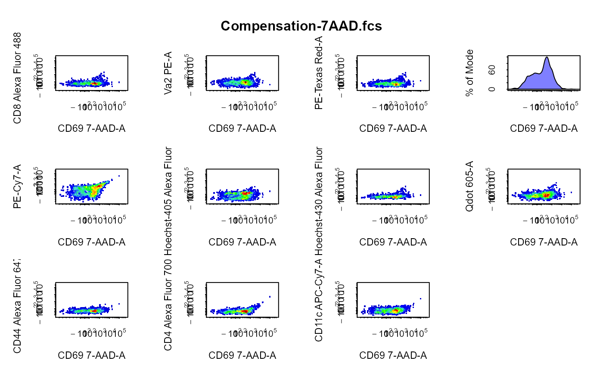# Compensation plots - flowSet cyto_plot_compensation(fs, channel_match = cmfile, compensate = TRUE, display = 1000 )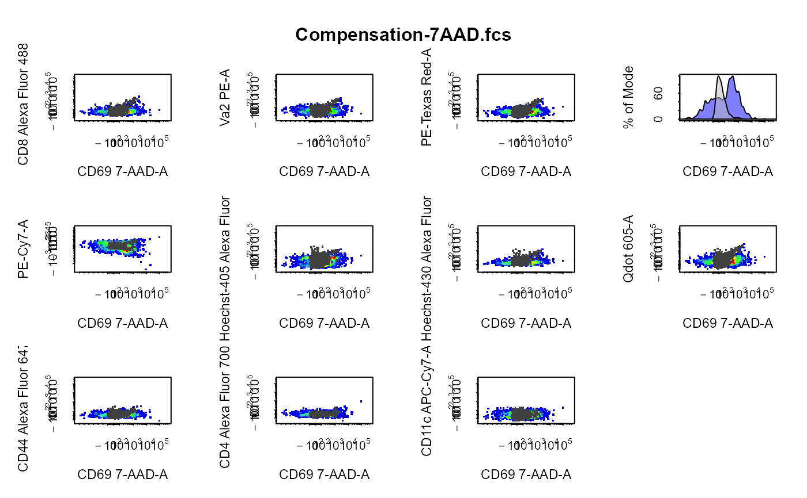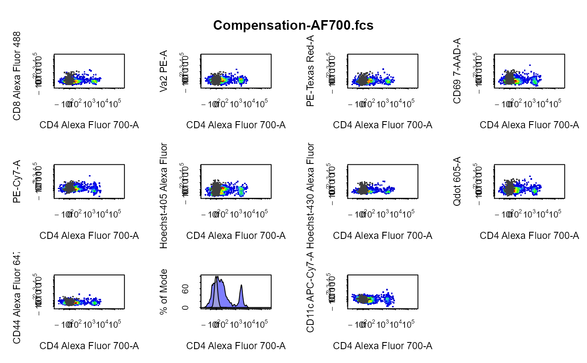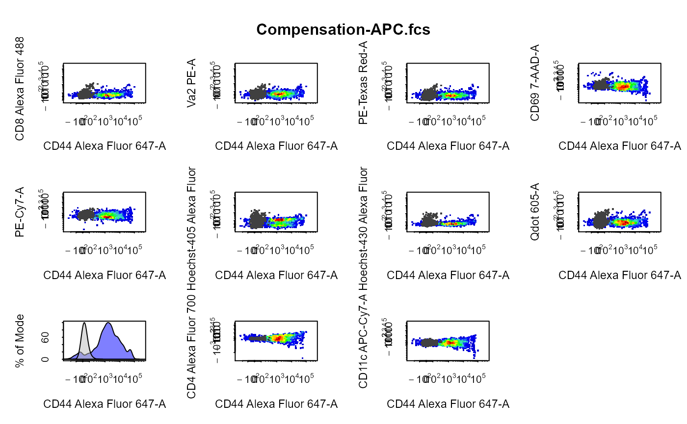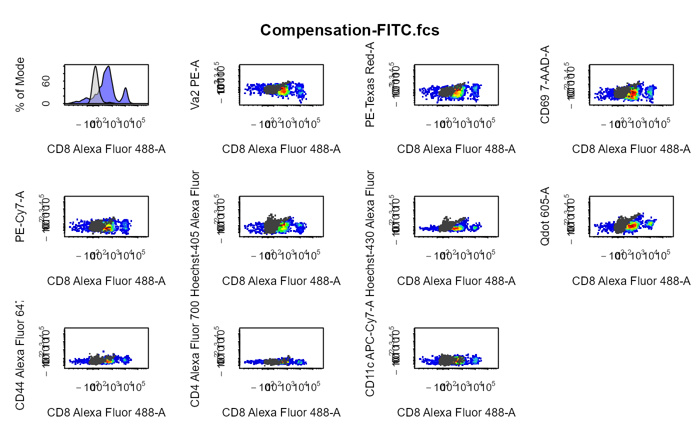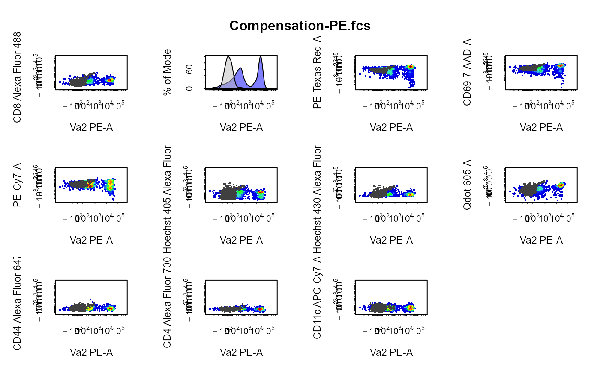# Compensation plots - GatingHierarchy cyto_plot_compensation(gs[[1]], parent = "Single Cells", channel_match = cmfile, display = 1000, contour_lines = 10 )# Compensation plots - GatingSet cyto_plot_compensation(gs, parent = "Single Cells", channel_match = cmfile, display = 1000 )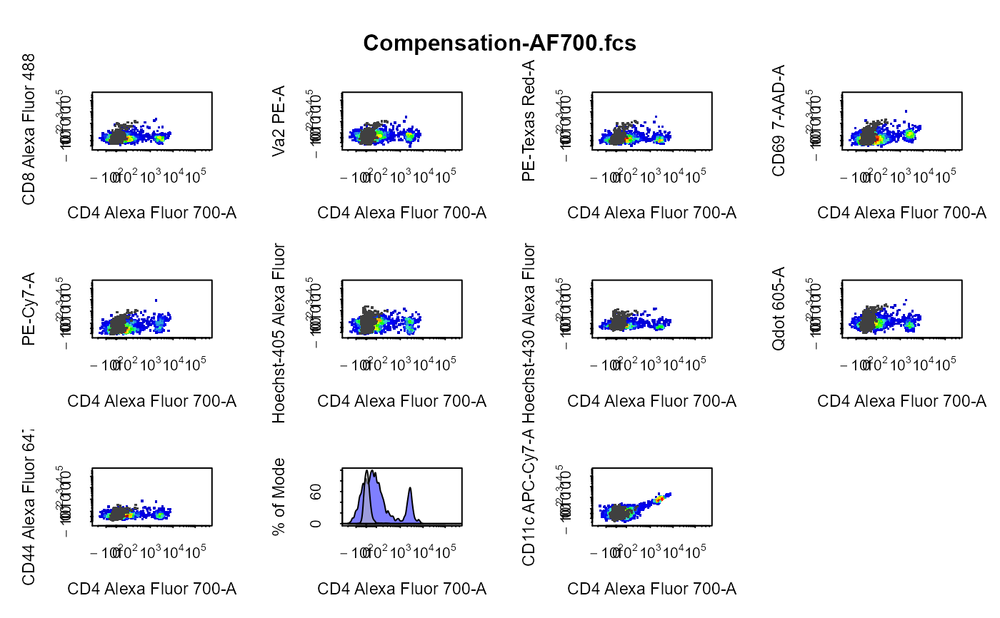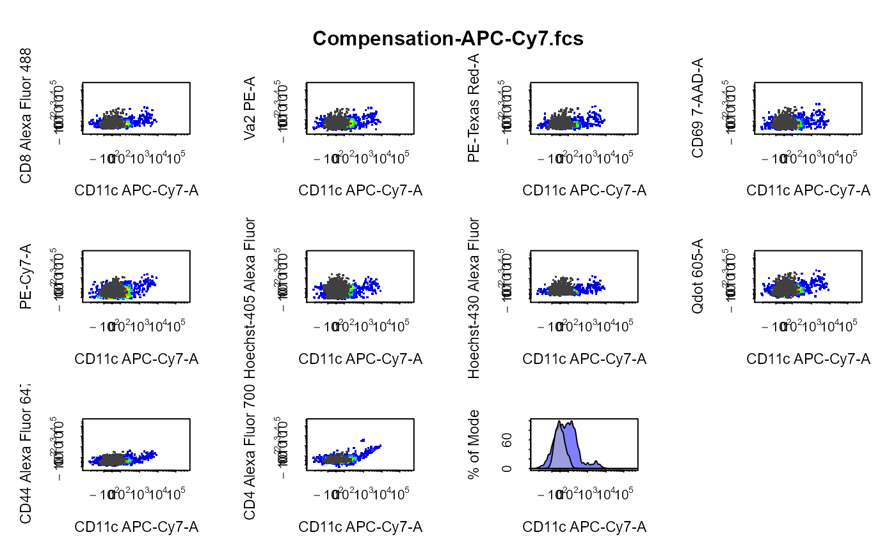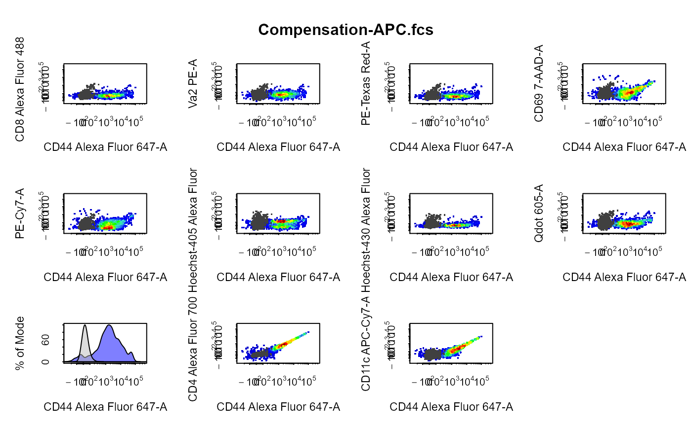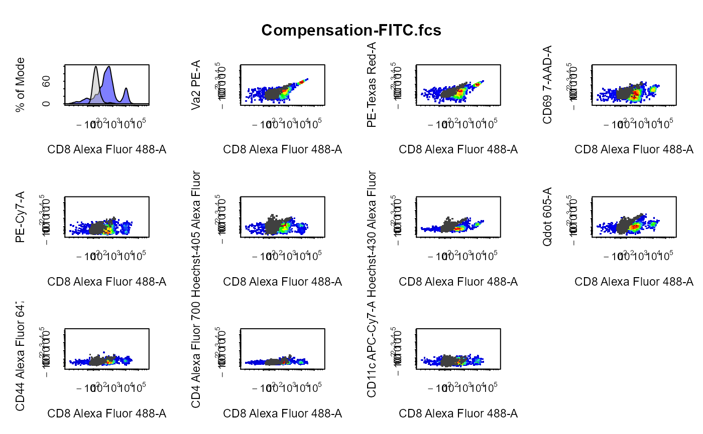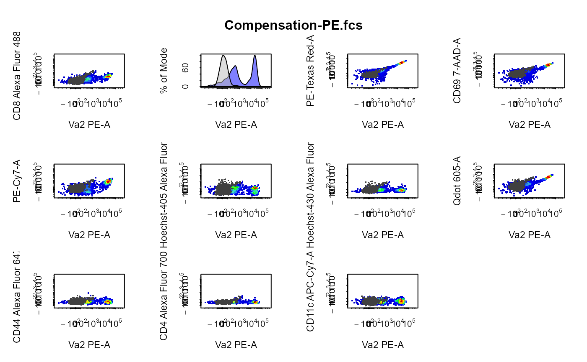